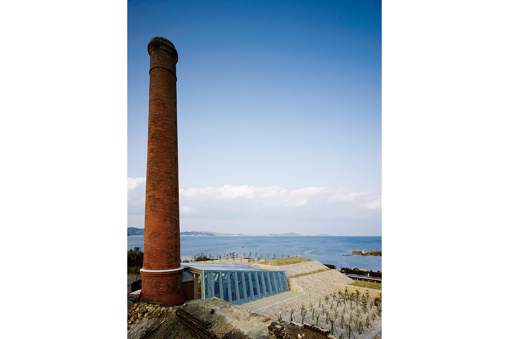
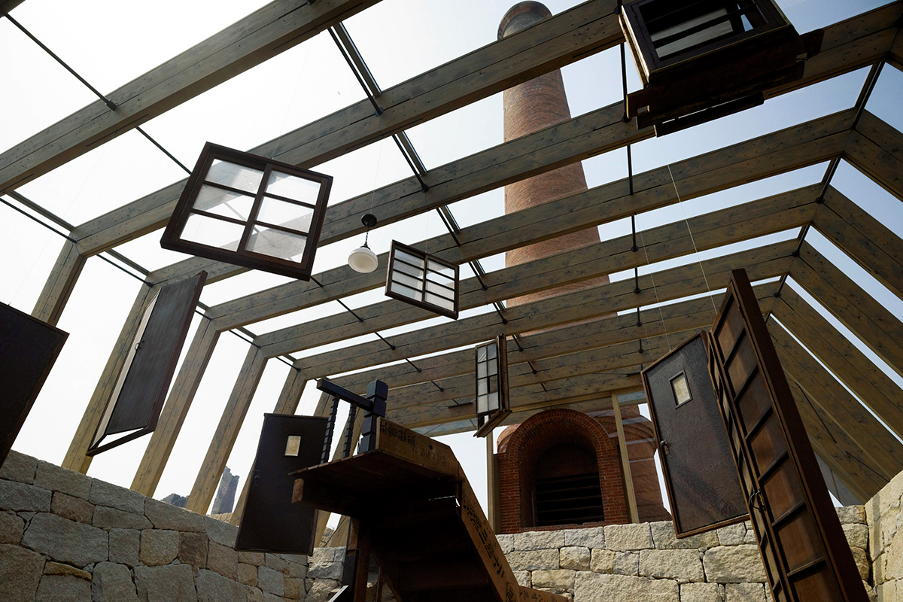

Префектура Окаяма · Инудзима · искусство
Инудзима: остров, где медеплавильный завод стал музеем

На крошечном острове во Внутреннем Японском море медеплавильный завод, молчавший почти сто лет, снова заговорил. Теперь он рассказывает об искусстве, архитектуре и цене, которую платит за прогресс.
Остров
Гранит, медь и тишина
Инудзима, единственный обитаемый остров города Окаямы, умещается в 0,72 км². Жителей здесь всего 36 человек. Когда-то остров кормил гранит: с эпохи Эдо до эпохи Мэйдзи к его берегам приплывали каменотёсы, и здешний камень шёл на строительство замка Окаямы и на работы в осакском порту. Потом настала очередь меди: в 1909 году на острове построили медеплавильный завод.
Завод прожил недолго. Медь резко упала в цене, и примерно через десять лет плавку остановили. Кирпичные трубы и корпуса остались стоять над морем, а остров надолго утих.
Музей
«Использовать существующее, создавать отсутствующее»
Возрождение началось, когда руины завода превратили в музей «Сэйрэнсё». Его концепция звучит как формула: опираться на то, что есть, и создавать то, чего не хватало. Стены сложены из «карами», шлаковых кирпичей, оставшихся от выплавки меди. Архитектор Хироси Самбуити сделал здание частью природного цикла острова: перепад высот старой дымовой трубы работает как естественная вентиляция, солнце и тепло земли заменяют электричество, а сложная система очистки воды живёт за счёт растений. Музей почти ничего не просит у острова и почти ничего ему не портит.
Внутри под высоким потолком подвешены окна, двери и доски, снятые со снесённого дома писателя Юкио Мисимы (1925–1970), прозаика и драматурга, который до конца жизни спорил с послевоенной Японией и её погоней за экономическим ростом. Из этих осколков художник Юкинори Янаги, чьи работы хранятся в собраниях от лондонской галереи Тейт до нью-йоркского MoMA, собрал большие инсталляции «Герой-батарейка» и «Башня Икарос» (Hero Dry Cell, Icarus Tower). Они говорят о самоуверенности XX века и о том, что остаётся после её крушения. Ходить мимо таких вещей невозможно.

Сад
Всё, что умеют растения
Ещё один пункт программы прячется в глубине острова. Долгие годы пустовавшую землю расчистили и превратили в «Инудзима: сад повседневной жизни». Здесь, среди старых островных домов, проходят выставки и мастер-классы, а их общая тема проста: «всё, что умеют растения». Побывать здесь стоит хотя бы ради того, чтобы понять, как жить рядом с природой, не покоряя её.
Постоянные экспозиции дополняют «домашние проекты»: старые островные дома, которые художники и архитекторы перестроили под свои работы. Единый билет действует на все арт-объекты Инудзимы сразу.
Практика
Как увидеть
Пятая по счёту триеннале «Сэтоути» прошла в 2022 году, но музей и сад живут и без фестиваля, почти круглый год. С марта по ноябрь музей открыт 9:00–16:30, последний вход в 16:00, а касса работает до 17:00. Выходные дни вторник, среда и четверг, если только на них не выпадает праздник. С декабря по февраль остров закрывается на зиму.
С 1 марта 2026 года музей смотрят с экскурсией: группы собираются у билетной кассы, гид ведёт от музея до дома F «домашнего проекта» и рассказывает об острове по пути. Экскурсия занимает около 45 минут, отправления с 9:00 до 15:45. Улицы, берег и работы под открытым небом по-прежнему можно обходить свободно.
Музей «Сэйрэнсё» (Inujima Seirensho Art Museum)
- Адрес
- префектура Окаяма, город Окаяма, остров Инудзима
- Телефон
- +81 86-947-1112
- Часы работы
- 9:00–16:30 (последний вход 16:00), касса 9:00–17:00
- Выходные
- вторник–четверг (март–ноябрь), все дни в декабре–феврале
- Цены / Вход
- 2 100 иен онлайн, 2 300 иен в кассе, единый билет на все арт-объекты Инудзимы, дети до 15 лет бесплатно
Фото: Ая Хондзё, Кэнта Ёсидзава, Таити Адзано.